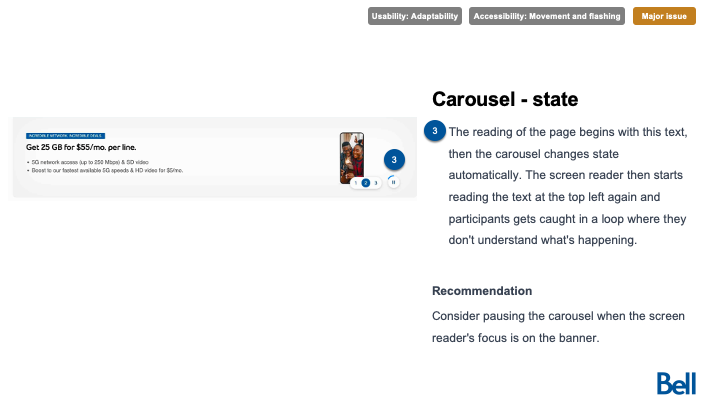
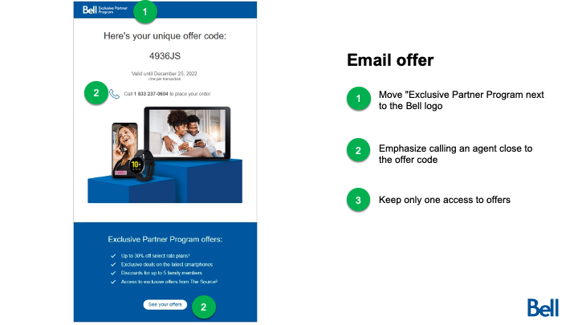

Challenge
Challenge
Le portail EPP (Programme d'achats pour partenaires) de Bell Canada présentait un taux d'abandon élevé lors de l'inscription et du parcours d'achat. Les utilisateurs étaient confus quant à leur admissibilité (employés de Bell vs employés d'entreprises partenaires), de plus, d'importantes barrières d'accessibilité numérique nuisaient à l'expérience des personnes en situation de handicap, provoquant de nombreux abandons.
The Exclusive Partner Program portal faced significant friction in its registration and ordering flow. Users were confused about program eligibility (Bell employees vs. partner company employees), and critical accessibility barriers were causing users to abandon the sign-up process.
Mon rôle
My Role
Lead UX Researcher / Lead UX. J'ai réalisé une évaluation globale de la plateforme, combinant des tests utilisateurs et des audits d'experts pour identifier les points de friction et formuler des recommandations de design concrètes.
Lead UX Researcher / Lead UX. I conducted a comprehensive evaluation of the platform, combining user testing and expert audits to identify friction points and provide actionable design recommendations.
L'impact
The Impact
- Compréhension accrue : Amélioration nette de la compréhension du programme et de l'admissibilité grâce à une meilleure hiérarchie de l'information.
- Enhanced Understanding: Significantly improved user comprehension regarding program benefits and eligibility through better information hierarchy.
- Conformité d'accessibilité : Identification et correction d'obstacles critiques, tels que les cases à cocher non fonctionnelles pour les lecteurs d'écran, garantissant une expérience véritablement inclusive.
- Accessibility Compliance: Identified and fixed critical barriers, such as non-functional checkboxes for screen readers, ensuring a truly inclusive experience.
- Inscription optimisée : Réduction drastique de la charge de travail dans le parcours d'inscription en simplifiant le contenu et les appels à l'action.
- Optimized Onboarding: Drastically reduced the workload in the registration flow by streamlining content and calls-to-action.

Le processus
The Process
Évaluation heuristique
Heuristic Evaluation
Réalisation d'un audit d'expert approfondi identifiant 12 points de friction majeurs répartis sur 5 critères clés d'ergonomie cognitive (Guidage, Cohérence, Gestion des erreurs, etc.) qui nuisaient à la performance globale.
Performed a deep-dive audit identifying 12 critical elements across 5 criteria (Consistency, Guidance, Error Management, etc.) that hindered the user experience.
Tests comparatifs
Comparative Testing
Conduite de tests d'utilisabilité de fidélité modérée auprès de 6 participants pour valider les pistes d'optimisation ergonomiques face aux habitudes d'usage existantes.
Conducted usability tests with 6 participants to compare the old design against the new design and identify remaining pain points.
Revue d'accessibilité
Accessibility Review
Sessions de tests spécialisées menées avec des utilisateurs aveugles ou malvoyants sur la plateforme Fable QA pour traquer et catégoriser les obstacles techniques aux lecteurs d'écran.
Led specialized interviews via the Fable platform with participants with visual deficiencies to identify "show-stopping" barriers for screen reader users.

Optimisation stratégique
Strategic Refinement
Formulation de recommandations concrètes pour optimiser l'ensemble du portail :
I provided actionable recommendations to optimize the entire portal:
- Inscription simplifiée : Amélioration de la validation des formulaires et de la gestion des erreurs pour réduire l'abandon.
- Streamlined Registration: Improved form validation and error handling to reduce abandonment.
- Parcours d'achat optimisé : Raffinement du parcours d'achat de bout en bout pour garantir clarté et rapidité.
- Optimized Ordering Flow: Refined the end-to-end purchasing journey to ensure clarity and speed.
- Navigation et hiérarchie : Réorganisation de l'architecture d'information pour rendre les avantages du programme plus faciles à découvrir.
- Navigation & Hierarchy: Reorganized the information architecture to make program benefits more discoverable.
Alignement de marque
Brand Alignment
Audit des modèles de courriels et des formulaires pour assurer une conformité à 100 % avec le guide de style et la logique globale de Bell.
Audited email templates and form designs to ensure 100% consistency with Bell’s global style guide and logic.
